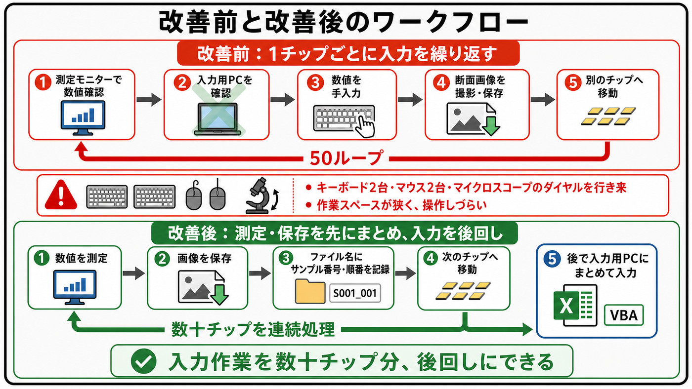

01 / THE FRICTION
入力が重いのではなく、
探して確かめることが重かった。
BEFORE
画像を撮影したあと、数十件分の結果を1,000行超の管理台帳へ転記。該当行を探し、入力し、再確認する。1件の行ズレが、全体の手戻りにつながる構造でした。
探す→入力する→確認する↻
原因を作業者の注意力に置かず、間違えても気づきにくい流れそのものを見直しました。

THE TURNING POINT
後工程で必要な情報は、撮影時点ですでにファイル名に存在していました。ならば、人が読み直して打ち直すのではなく、仕組みに読ませる。
02 / THE SYSTEM
命名規則を、
小さな入力APIにする。
ファイル名を決まった順番のデータとして設計し、Excel関数とVBAで次の工程へ渡しました。
AA-00TP01_X.XXum_状態A.jpg
AA-00 型番
TP 位置
01 番号
X.XXum 測定値
状態A 状態
公開用サンプル。実データ・実型番は含めていません。
FROM FOLDER TO TABLE
4つの工程に分けて、
人の判断を残す。
- 01フォルダを選ぶ
対象画像の場所を指定
- 02名前を一覧化
VBAでファイル名を取得
- 03項目を抽出
MID・FIND・IFERROR
- 04台帳へ反映
該当行と照合して確認
03 / THE RESULT
TIME REFRAMED
注意力ではなく、
仕組みで短くする。
3–4h→45m
破断面観察
3〜4時間かかっていた記録作業を、約45分へ短縮。
ALカットバリ
画像ごとの転記を自動抽出し、作業時間を約3分の1へ。
設計の姿勢
ミスゼロを謳わず、確認しやすく、手戻りしにくい流れを作る。
WHAT I BRING
現場の違和感を、
再利用できる設計へ。
業務を観察し、情報の流れを見つけ、限られたツールで使える形へ落とし込む。次はこの経験を、ソフトウェア開発とAI活用による業務改善へ広げていきます。
CASE STUDYを読む